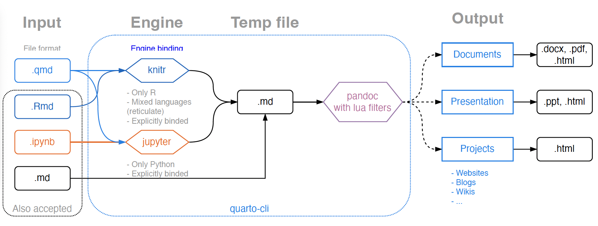

Quarto Slides with Beamer/PPT/Revealjs
ECNU统计学院模板 — 16:9
华东师范大学统计学院
2025-05-07
基本介绍
目录
基本介绍
幻灯片常用要素设定
代码
认识 Quarto
从 Rmarkdown 到 Quarto
由Posit (前身为Rstudio) 全新打造: 下一代的RMarkdown， 于2021年1月开始开发，2022年12月发布第一版
Quarto 是一个基于 Pandoc 的现代开源科技出版系统
功能更加强大和灵活: 适用于数据分析和机器学习等领域
支持代码块执行: R, Python，Julia，JavaScript Observable 等
支持多格式输出: PDF、HTML、、Word 等
支持自定义: CSS、JavaScript 和 模板
基于Quarto的文学化统计编程流程

图 1: Quarto 文学化统计编程流程
Quarto工作原理
图 2: Quarto工作原理
幻灯片常用要素设定
目录
基本介绍
幻灯片常用要素设定
代码
有序列表设定
有序列表(代码)
有序列表(结果)
- one
- two
- three
无序列表设定
无序列表(代码)
无序列表(结果)
- fruits
- apples
- pears
数学公式
行内公式
$x^2+y^2=1$或\(x^2+y^2=1\): x^2+y^2=1.独立行公式: 公式, 公式(1)
\frac{\partial \mathrm C}{ \partial \mathrm t } + \frac{1}{2}\sigma^{2} \mathrm S^{2} \frac{\partial^{2} \mathrm C}{\partial \mathrm C^2} + \mathrm r \mathrm S \frac{\partial \mathrm C}{\partial \mathrm S}\ = \mathrm r \mathrm C \tag{1}
- 多行公式 — 一个标号: 公式(2)
\begin{aligned} g(X_{n}) &= g(\theta)+g'({\tilde{\theta}})(X_{n}-\theta) \\ \sqrt{n}[g(X_{n})-g(\theta)] &= g'\left({\tilde{\theta}}\right) \sqrt{n}[X_{n}-\theta ] \end{aligned} \tag{2}
分栏布局
左栏内容
左栏内容
右栏内容
右栏内容
代码
目录
基本介绍
幻灯片常用要素设定
代码
R代码
R图形输出: 图 3

表格输出—使用kable程序包, 表 1
Python代码
Python图形输出: 图 4.
参考文献
Quarto比Rmarkdown更适合进行文学化统计编程 (Knuth, 1984; Xie, 2014, 2015). 有关R语言的学习可参考 R Core Team (2021), 汤银才 (2024).